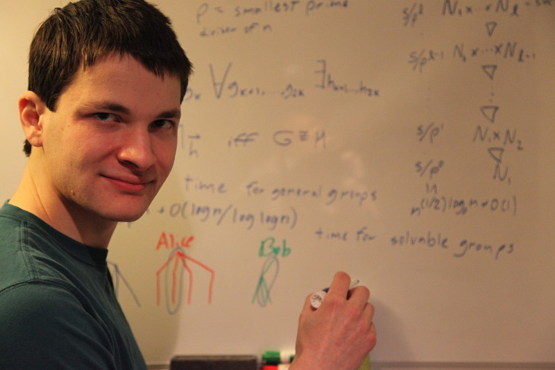

David J. Rosenbaum

About
I am a computer scientist with research interests in algorithms (both classical and quantum), isomorphism problems, algebraic problems, alternate oracle models, query complexity, state preparation, symmetrization and quantum circuits. I recently finished a JSPS postdoctoral fellowship at The University of Tokyo with François Le Gall. I received my PhD in 2015 from the University of Washington with Paul Beame and Aram Harrow as my advisors.
Publications
-
Aram W. Harrow and David J. Rosenbaum. Permutations in 2D Quantum Circuits. In preparation, 2016.
-
François Le Gall and David J. Rosenbaum. On the Group and Color Isomorphism Problems. 2016, arXiv:1609.08253.
-
David J. Rosenbaum and Fabian Wagner. Beating the Generator-Enumeration Bound for p-Group Isomorphism. Theoretical Computer Science, 593:16-25, 2015, arXiv:1312.1755.
-
David J. Rosenbaum. Beating the Generator-Enumeration Bound for Solvable-Group Isomorphism. arXiv:1412.0639.
-
Aram W. Harrow and David J. Rosenbaum. Uselessness for an Oracle Model with Internal Randomness. Quantum Information and Computation, 14(7&8), 2014, arXiv:1111.1462.
-
David J. Rosenbaum. Bidirectional Collision Detection and Faster Algorithms for Isomorphism Problems. arXiv:1304.3935.
-
David J. Rosenbaum. Breaking the n^(log n) Barrier for Solvable-Group Isomorphism. SODA 2013.
-
David J. Rosenbaum. Optimal Quantum Circuits for Nearest-Neighbor Architectures. TQC 2013.
-
David J. Rosenbaum. Quantum Algorithms for Tree Isomorphism and State Symmetrization. arXiv:1011.4138.
-
David J. Rosenbaum and Marek A. Perkowski. Mapping Binary Functions to a Practical Adiabatic Quantum Computer. In Proceedings of the 39th International Symposium on Multiple Valued Logic, pages 270 – 275, 2010. 1
-
David J. Rosenbaum. Binary Superposed Quantum Decision Diagrams. Quantum Information Processing, 9:463 – 496, 2009. 2
-
David J. Rosenbaum and Marek A. Perkowski. Extended Superposed Quantum State Initialization Using Disjoint Prime Implicants. Physical Review A, 79:052310, 2009. 3
-
David J. Rosenbaum and Marek A. Perkowski. Efficient Implementation of Controlled Operations for Multivalued Quantum Logic. In Proceedings of the 39th International Symposium on Multiple Valued Logic, pages 86 – 91, 2009. 4
-
David J. Rosenbaum and Marek A. Perkowski. Superposed Quantum State Initialization Using Disjoint Prime Implicants. In Proceedings of the 38th International Symposium on Multiple Valued Logic, pages 144 – 149, 2008. 5
I am required to provide the following information.
- IEEE version © 2010 IEEE. Personal use of this material is permitted. However, permission to reprint/republish this material for advertising or promotional purposes or for creating new collective works for resale or redistribution to servers or lists, or to reuse any copyrighted component of this work in other works must be obtained from the IEEE.
- The original publication is available at www.springerlink.com. © Springer Science+Business Media, LLC, 2009.
- © American Physical Society, 2009.
- IEEE version © 2009 IEEE. Personal use of this material is permitted. However, permission to reprint/republish this material for advertising or promotional purposes or for creating new collective works for resale or redistribution to servers or lists, or to reuse any copyrighted component of this work in other works must be obtained from the IEEE.
- IEEE version © 2008 IEEE. Personal use of this material is permitted. However, permission to reprint/republish this material for advertising or promotional purposes or for creating new collective works for resale or redistribution to servers or lists, or to reuse any copyrighted component of this work in other works must be obtained from the IEEE.